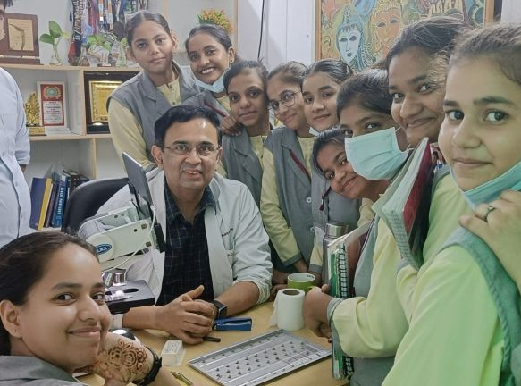
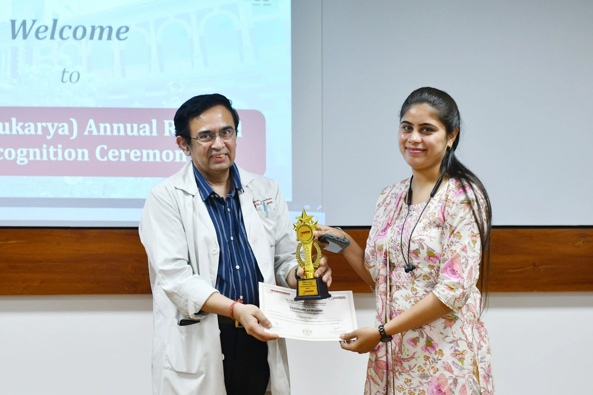

I'm Dr. Arpan Gandhi, a
Diagnostics Leader Healthcare Strategist Board Advisor
What I Do
Strategic Leadership & Growth
Strategic healthcare leadership, operational transformation, and organizational growth for diagnostic enterprises and hospital networks.
View consultingLaboratory Operations
End-to-end laboratory operations management including quality systems, process optimization, and building scalable diagnostic service delivery.
View consultingAcademic Collaboration
Partner with me for clinical collaborations, research initiatives, academic program development, and building world-class training ecosystems.
Get in touchMentorship & Training
Structured teaching modules for residents, fellows, and laboratory professionals. Over 200 professionals mentored toward leadership roles.
Learn moreMergers & Acquisitions
Led acquisition and integration of regional diagnostic centers across tier 2 and 3 cities, creating seamless operational networks.
View journeyResearch & Innovation
Rare case archives, clinicopathological correlations, and exploring AI-driven advances in diagnostics for the future of medicine.
Learn more.jpeg)
From LinkedIn
Thoughts Worth Reading
"This award is more than a trophy — it is a testament to the collective passion, dedication, and precision that each member of our team brings to work every single day. Quality is not an act, it is a habit."

"Witnessing the growth and progress of these young women — both academically and in their personalities — brings immense satisfaction and joy. Every teaching experience teaches you something fabulous."

"Improvement isn't a quarterly goal — it's a daily practice. 5008 ideas implemented. Small acts. Big shifts. Because when a hospital runs on kindness and consistency, healing begins even before the treatment does."
From the Blog
Latest Writing

Why Most Diagnostic Startups Fail: Lessons for Founders and Investors
The diagnostics sector has never been more exciting — yet many startups still fail. The reason is rarely a lack of innovation.

What I Learned Building Diagnostic Networks Across India
Over three decades in diagnostic laboratory medicine, I have had the privilege of working across standalone laboratories and large corporate chains.

From Technician to Leader: Career Pathways in Laboratory Medicine
Laboratory medicine is often seen as purely technical. Behind every accurate report stands someone whose growth defines the quality of diagnostics.

Why Diagnostic Labs Need Leaders, Not Just Managers
In the last three decades, diagnostic laboratories in India have undergone a remarkable transformation — from small facilities to large corporate networks.
How Can I Help?
Three decades of operational experience across India's diagnostic landscape — clinically grounded, commercially realistic.
Diagnostic Chains
Operational scale, quality systems, M&A integration, and multi-site expansion — built from firsthand experience running large diagnostic networks.
Hospital Networks
Strengthening pathology and laboratory departments within hospital systems — from NABL accreditation to workflow redesign and clinical integration.
Healthcare Investors
Due diligence, target assessment, and post-acquisition strategy for diagnostic assets — with clinical credibility and commercial perspective.
Young Professionals
Career guidance, mentorship, and subspecialty direction for residents and laboratory professionals finding their path in diagnostic medicine.
Let's talk.
Fill in the form and I'll get back to you personally. Every message is read no auto-replies, no assistants.